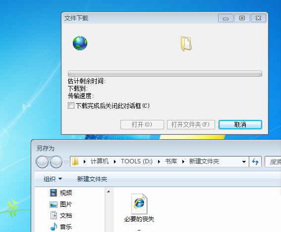
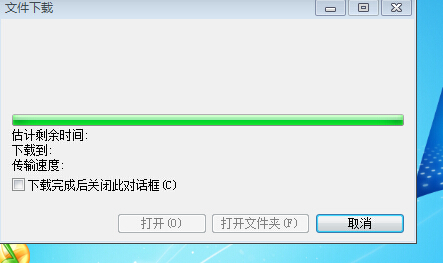

Conversation with 81184027 at Sun 06 Jul 2014 10:28:57 PM CST on 154115835 (webqq)
(10:19:58 PM) 2893943847: 换环境
(10:20:10 PM) 4月青年: 这个是真的吗
(10:20:18 PM) 简单: 我姐也是
(10:21:06 PM) 4月青年: 哎，精神视界
(10:21:13 PM) 4月青年: 狭隘
(10:21:18 PM) 简单: 怎么换，她还有三个孩子在读书呢
(10:21:27 PM) 2893943847: 嗯
(10:22:17 PM) 2893943847: 精神.思想等出问题
(10:23:08 PM) 简单: 我妈帮她看孩子，她一点也不感激，对妈特不好
(10:23:31 PM) 简单: 是啊，受了打击
(10:24:15 PM) 简单: 我们看着心疼啊
(10:25:01 PM) 540369101: 哎，受害者家属是有苦没处说
(10:25:17 PM) 简单: 可是又能怎样呢？报警也设用啊
(10:25:28 PM) 540369101: 法律又管不了那么多
(10:27:18 PM) 简单: 难道眼睁睁看着她到离家出走的那一天吗？无奈啊
(10:27:56 PM) 540369101: 对于那些执迷不悟的信徒我们救不了只能离他们远点
(10:28:14 PM) 540369101: 没办法
(10:29:19 PM) 540369101: 你生活和她越有交集给你带来的麻烦和苦恼越多
(10:29:37 PM) 简单: 可孩子成长需要妈妈的陪伴他们还那么小
(10:30:01 PM) 540369101: 最可怜的就是孩子
(10:19:58 PM) 苹果: 换环境
(10:20:10 PM) 4月青年: 这个是真的吗
(10:20:18 PM) 简单: 我姐也是
(10:21:06 PM) 4月青年: 哎，精神视界
(10:21:13 PM) 4月青年: 狭隘
(10:21:18 PM) 简单: 怎么换，她还有三个孩子在读书呢
(10:21:27 PM) 苹果: 嗯
(10:22:17 PM) 苹果: 精神.思想等出问题
(10:23:08 PM) 简单: 我妈帮她看孩子，她一点也不感激，对妈特不好
(10:23:31 PM) 简单: 是啊，受了打击
(10:24:15 PM) 简单: 我们看着心疼啊
(10:25:01 PM) さ噯ぢ之泫ぁ: 哎，受害者家属是有苦没处说
(10:25:17 PM) 简单: 可是又能怎样呢？报警也设用啊
(10:25:28 PM) さ噯ぢ之泫ぁ: 法律又管不了那么多
(10:27:18 PM) 简单: 难道眼睁睁看着她到离家出走的那一天吗？无奈啊
(10:27:56 PM) さ噯ぢ之泫ぁ: 对于那些执迷不悟的信徒我们救不了只能离他们远点
(10:28:14 PM) さ噯ぢ之泫ぁ: 没办法
(10:29:19 PM) さ噯ぢ之泫ぁ: 你生活和她越有交集给你带来的麻烦和苦恼越多
(10:29:37 PM) 简单: 可孩子成长需要妈妈的陪伴他们还那么小
(10:30:01 PM) さ噯ぢ之泫ぁ: 最可怜的就是孩子
(10:30:47 PM) 简单: 可那是自己的亲人，又怎么离她远点呢
(10:31:13 PM) さ噯ぢ之泫ぁ: 但是在她没有脱离邪教孩子给她带更不好，她会教坏孩子
(10:29:45 PM) lost message from #167447 to #167447
(10:31:32 PM) 4月青年: 宽容
(10:31:32 PM) 4月青年: (#167447)谅解
(10:31:33 PM) 4月青年: 理解
(10:31:47 PM) 4月青年: 引导
(10:30:13 PM) 光: 远离是不对的
(10:30:20 PM) 光: 他们是病人不是坏人
(10:32:13 PM) さ噯ぢ之泫ぁ: 简单几个字说的容易做的难
(10:30:28 PM) 光: 应该去理解包容引导
(10:30:56 PM) 光: 群共享里面有一本关于监狱犯人的心理辅导方面的书籍
(10:30:59 PM) 光: 你找找看
(10:31:10 PM) 光: 可以了解一些基本概念
(10:32:58 PM) 简单: 是啊，她也是受害者
(10:33:01 PM) 4月青年: 如果亲人都远离
(10:31:16 PM) 光: 对你转化家人有帮助
(10:31:22 PM) 光: 如果连亲人都放弃了
(10:31:28 PM) 光: 他们真的就没救了
(10:33:17 PM) 4月青年: 嗯
(10:31:58 PM) 光: 那本书应该是12年分享的
(10:32:04 PM) 光: 最下面
(10:32:53 PM) 光: 这些人其实就是邪教的囚徒
(10:32:57 PM) 光: 道理相通的
(10:34:59 PM) さ噯ぢ之泫ぁ: 我婆婆信之前家里也说怎么说的没用现在大家就是不管不问了。
(10:33:25 PM) 光: 这种不对的
(10:33:35 PM) 光: 不对立后面还有多关心
(10:35:29 PM) さ噯ぢ之泫ぁ: 亲戚都认为她是神经病
(10:33:45 PM) 光: 不对立只是避免矛盾激化
(10:33:59 PM) 光: 多关心是寻找解决问题的切入点
(10:34:07 PM) 光: 两个如果分开就没有意义
(10:34:17 PM) 光: 两个必须结合起来做
(10:34:46 PM) 光: 你都不了解他们的心理需求你怎么去帮助他们
(10:34:56 PM) 光: 了解从关心入手
(10:34:58 PM) 光: 家人的关心
(10:35:00 PM) 光: 很重要的
(10:35:20 PM) 光: 神经病又怎样
(10:35:23 PM) 光: 有病看病么
(10:37:26 PM) さ噯ぢ之泫ぁ: 叫她换个地方换个环境去外省她不去，哪都不去就呆在家里
(10:35:45 PM) 光: 如果你确定是神经病，那也好办
(10:35:47 PM) 光: 吃药了
(10:36:12 PM) 光: 不管不问这个肯定是不对的
(10:36:31 PM) 光: 哪有建议别人不管不问的
(10:37:25 PM) 光: 这个世界上的人胡说八道的人很多
(10:37:30 PM) 光: 成事不足，败事有余
(10:37:37 PM) 光: 遇到问题看书有点晚了
(10:37:55 PM) 光: 但是如果能看几本对症的书还是有意义的
(10:38:18 PM) 光: 比听人胡说八道强
(10:42:54 PM) 独行者: :D成功的很少
(10:41:31 PM) 光: 三个小猪的故事听过么
(10:41:40 PM) 光: 一个小猪建立了一个草屋
(10:41:48 PM) 光: 还有小猪建立了一个木屋
(10:41:56 PM) 光: 最后的小猪建立了一个石头屋子
(10:42:01 PM) 光: 遇到坏人了
(10:42:09 PM) 光: 草屋一吹就倒了
(10:42:27 PM) 光: 木屋废了点力气也倒了
(10:42:33 PM) 光: 只有石头屋子
(10:42:43 PM) 光: 禁受住了考验
(10:44:32 PM) 独行者: 听过了石屋的没事
(10:42:49 PM) 光: 嗯
(10:44:46 PM) 4月青年: 对！
(10:43:05 PM) 光: 你如果是石头屋子这个问题不会发生你身上的
(10:43:35 PM) 光: 从自己身上找原因
(10:43:40 PM) 光: 把生活矫正了
(10:43:44 PM) 光: 问题就解决了
(10:45:48 PM) 4月青年: 第三只猪老聪明了
(10:44:09 PM) 光: 中国有句老话，人正弊自除
(10:46:04 PM) 4月青年: 一开始就是个被人说的笨蛋
(10:46:04 PM) 独行者: 洗自己脑易，洗别人难
(10:44:18 PM) 光: 石头屋子建立的慢啊
(10:44:26 PM) 光: 对啊
(10:44:38 PM) 光: 草屋最快
(10:44:45 PM) 光: 捷径派
(10:45:02 PM) 光: 遇到问题也倒的最快
(10:45:25 PM) 光: 这样的人很多很多的
(10:47:40 PM) 4月青年: 嗯
(10:46:01 PM) 光: 嗯
(10:46:05 PM) 光: 慢慢来
(10:47:58 PM) 独行者: 嗯!态多喜欢走近路的
(10:46:13 PM) 光: 把自己的石头屋子修葺好
(10:48:04 PM) 4月青年: 看似一举成名
(10:46:32 PM) 光: 不要跟着人乱跑了
(10:48:31 PM) 4月青年: 但是发展缓慢
(10:49:01 PM) 4月青年: 也不是真正自己想要的东西
(10:48:07 PM) 光: 邪教所能迷惑的也只是一些容易被迷惑的人
(10:50:52 PM) 4月青年: 固执的人很难改变
(10:49:16 PM) 光: 嗯
(10:51:08 PM) 4月青年: 邪教多是固执的人
(10:49:25 PM) 光: 其实只要承认自己有问题
(10:49:27 PM) 光: 就好版
(10:49:29 PM) 光: 好办
(10:49:33 PM) 光: 很多人就是认为自己没问题
(10:49:36 PM) 光: 都是别人的问题
(10:49:38 PM) 光: 社会的问题
(10:49:41 PM) 光: 这个难办了
(10:51:56 PM) 独行者: 是啊!天生就傻子，而且家族性的，遗传的
(10:50:14 PM) 光: 这样真的是往相反的方向跑了
(10:52:18 PM) 4月青年: 但是固执的人一旦被一种意识观取代就不信任何“异己”观点
(10:50:33 PM) 光: 跑得人多，看上去还挺壮观的
(10:52:30 PM) 4月青年: 固执地有好有坏
(10:51:08 PM) 光: 我们这些落伍的人
(10:51:18 PM) 光: 老老实实从自己做起，修葺好自己的石头屋子吧
(10:53:34 PM) 4月青年: 老早输在起跑线上咋办
(10:52:01 PM) 光: 你打好自己的基础
(10:52:03 PM) 光: 一步一步来
(10:52:11 PM) 光: 机会属于有准备的人呢
(10:54:00 PM) 独行者: 是啊!他们走他的邪，我们走我们的路
(10:52:17 PM) 光: 嗯
(10:54:05 PM) 辽宁-沈阳&樱桃: 好，开始修石头屋子
(10:52:22 PM) lost message from #167553 to #167553
(10:54:09 PM) 心理师仲老师: 【惨剧：14岁姐姐恨父母偏心 捅杀9岁妹妹】“你闭上眼，我给你惊喜。”9岁的妹妹闭上眼后，14岁的小媛却将妹妹两刀捅死。小媛供述，自己9岁前在老家留守，嫉恨从出生就在父母身边的妹妹事事受宠，且总被妹妹告状，上小学时就动此杀心…"你们疼妹妹，我就挖你们的心头肉"。
——心理动力学的解释是：孩子错，是父母错：一，刚出生即抛弃；二，在奶奶和姥姥家轮流寄养；三，回父母身边后，父母没好好补偿孩子，而是对孩子很多要求，且将姐姐和妹妹比；四，多次提到要杀妹妹，父母没意识。父母必须懂得：分离太久的孩子，回自己身边时，要先好好补偿爱，且时间可能很长。
(10:52:23 PM) 光: 对
(10:55:14 PM) 4月青年: :handclap:
(10:55:59 PM) 苹果: :handclap::强:
(10:54:53 PM) 光: :face14:
(10:56:49 PM) 苹果: :)
(10:57:37 PM) 辽宁-沈阳&樱桃: 这个度不好掌握，以前看过一些这样的故事，有补偿过度的，同样悲剧
(10:56:32 PM) 光: 多看，多学，多体悟，多实践，多总结
(10:56:44 PM) 光: 即使是一门手艺也要反复实践
(10:56:46 PM) 光: 才能掌握
(10:57:01 PM) 光: 这个没有捷径的
(10:57:35 PM) 光: 有经验，没捷径
(10:58:06 PM) 光: 无论是成功的还是失败的最后都成了你的经验
(11:00:48 PM) 福建-福州&水浒: 摸着石头过河
(10:59:04 PM) 光: 嗯
(11:00:54 PM) 辽宁-沈阳&樱桃: 嗯，大道甚夷，而人好径~~更年轻的时候特别想一下下就如何如何
(11:01:06 PM) 福建-福州&水浒: 慢慢摸也是一种磨练
(11:01:57 PM) 苹果: 光总:关于监狱犯人的心理辅导方面的书籍 名称是什么啊,我找不到
(11:02:03 PM) 辽宁-沈阳&樱桃: 着急呀，总怕被落下被超越
(11:00:48 PM) 光: 我都快忘了什么名字了
(11:00:57 PM) 光: 你看吧，反正在下面
(11:01:02 PM) 光: 只有一本
(11:01:06 PM) 光: 应该好找
(11:03:46 PM) 苹果: 嗯
(11:02:03 PM) 光: 嗯
(11:05:53 PM) 福建-福州&水浒: 不对立，多关心，合理安排时间，保管好财物
(11:06:10 PM) 福建-福州&水浒: 很简单嘛，能做到的人少
(11:04:39 PM) 光: 那就不简单
(11:04:50 PM) 光: 只是字简单
(11:06:43 PM) 辽宁-沈阳&樱桃: 好像还有一点
(11:07:02 PM) 福建-福州&水浒: 先把这几点做好了
(11:05:19 PM) 光: 嗯
(11:07:11 PM) 福建-福州&水浒: 最后那事就成了
(11:07:24 PM) 辽宁-沈阳&樱桃: 隔离呢
(11:07:30 PM) 福建-福州&水浒: 主要在第三点
(11:06:04 PM) 光: 你把自己的时间安排好了
(11:06:11 PM) 光: 别人怎么来偷你的实践
(11:06:12 PM) 光: 时间
(11:08:05 PM) 福建-福州&水浒: 双方性的
(11:08:06 PM) 辽宁-沈阳&樱桃: 差点出了大事儿
(11:06:35 PM) 光: 你如果自己时间不懂怎么安排
(11:06:45 PM) 光: 迟早别人来帮你安排你的时间
(11:08:41 PM) 福建-福州&水浒: 哈哈
(11:08:49 PM) 辽宁-沈阳&樱桃: :强:
(11:07:02 PM) 光: ：）
(11:09:04 PM) 福建-福州&水浒: 看简单其实一点都不简单
(11:09:47 PM) 辽宁-沈阳&樱桃: 这两天对我来说好像经历了一次世界末日
(11:08:11 PM) 光: 其实也没啥
(11:08:13 PM) 光: 人生么
(11:08:24 PM) 光: 有点起伏正常
(11:08:32 PM) 光: 大不了回到原点
(11:09:01 PM) 光: 本来你也没带什么来到这个世界
(11:09:09 PM) 光: 也注定什么都带不走
(11:11:28 PM) 辽宁-沈阳&樱桃: 我不想带走什么，关键是还没留下什么
(11:09:49 PM) 光: 我觉得一个人一生能活的问心无愧就很好了
(11:11:45 PM) 福建-福州&水浒: :)
(11:10:05 PM) 光: :face14:
(11:10:26 PM) 光: 你如果有这样的心态，又怕什么世界末日呢
(11:12:30 PM) 辽宁-沈阳&樱桃: 我感觉失去了妈妈
(11:10:54 PM) 光: 她在你的记忆里
(11:10:58 PM) 光: 失去不了的
(11:13:24 PM) 辽宁-沈阳&樱桃: 但这种记忆总不及美好的记忆
(11:11:56 PM) 光: 还有就是人啊，其实注定要孤独的面对一些问题
(11:12:08 PM) 光: 没有人能陪你到永远的
(11:14:34 PM) 福建-福州&水浒: 卡耐基《人性的弱点》@光 能否下一本？？？
(11:12:54 PM) 光: 嗯
(11:13:01 PM) 光: 行
(11:13:07 PM) 光: 有机会我上传
(11:13:10 PM) 光: 我现在在linux下
(11:13:17 PM) 光: 调试本地的服务器
(11:15:13 PM) 福建-福州&水浒: OK感谢
(11:13:27 PM) 光: 界面非常简单
(11:13:28 PM) 光: 嗯
(11:15:33 PM) 福建-福州&水浒: 我觉得也得从沟通细节上入手
(11:13:51 PM) 光: 嗯
(11:13:54 PM) 光: 提高自己
(11:15:49 PM) 福建-福州&水浒: 抓住对方的弱点，提高自己
(11:14:05 PM) 光: 嗯
(11:17:47 PM) 辽宁-沈阳&樱桃: 我真正认识到自己在沟通方面有很多不足
(11:16:09 PM) 光: 嗯
(11:18:07 PM) 福建-福州&水浒: 需要提高
(11:18:10 PM) 辽宁-沈阳&樱桃: 发心要改变自己
(11:16:29 PM) 光: 嗯
(11:18:32 PM) 福建-福州&水浒: 我沟通的基础时刻保持着对对方的爱
(11:19:22 PM) 辽宁-沈阳&樱桃: 我也同样爱，但以前方法不好
(11:19:32 PM) 福建-福州&水浒: 有人打你左脸转过右脸
(11:20:03 PM) 福建-福州&水浒: 更何况打你的这个人是你的亲人还是个病人
(11:18:50 PM) 光: 嗯
(11:20:42 PM) 辽宁-沈阳&樱桃: 是妈妈的这件事让我意识到自己的欠缺
(11:20:51 PM) 辽宁-沈阳&樱桃: 也许是好事
(11:21:10 PM) 福建-福州&水浒: 遇事不逃避解决问题也是一种成长
(11:19:57 PM) 光: 嗯
(11:21:45 PM) 福建-福州&水浒: (#167645)失去的是金钱，得来的是亲情，情比财贵
(11:20:20 PM) 光: 智者就是在反思中成长起来的
(11:21:29 PM) lost message from #167647 to #167647
(11:23:16 PM) 福建-福州&水浒: 得到了许多财富后发觉身边没有朋友与亲情了那才是最可悲的
(11:21:38 PM) 光: 嗯
(11:39:19 PM) 苹果: 光总看看怎么下载不了
(11:39:57 PM) 苹果: 
(11:40:14 PM) 苹果: 卡在那了
(11:40:04 PM) 光: 不知道啊
(11:40:13 PM) 光: 我在linux下
(11:40:21 PM) 光: 你这个画面我没见过
(11:40:26 PM) 光: 我虚拟机用的xp
(11:40:32 PM) 光: 这个你好像是win7
(11:40:37 PM) 光: 我没怎么用过
(11:42:31 PM) 苹果: 我用W7
(11:40:48 PM) 光: 对
(11:40:54 PM) 光: 没怎么用过
(11:41:01 PM) 光: 你自己研究一下吧
(11:43:07 PM) 苹果: 嗯谢谢
(11:41:22 PM) 光: 嗯
(12:39:51 AM) The account has disconnected and you are no longer in this chat. You will automatically rejoin the chat when the account reconnects.